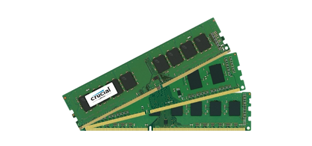

| RAM(Random Access Memory) |
| Ram(Random Access Memory) Nedir? |
RAM, yalnıca bilgayar türlerinin değil, aynı zamanda tabletlerin, akıllı telefonların ve oyun konsollarının da önemli bir bileşeni. RAM bellek olmadan herhangi bir sistem üzerinde yapılacak işlemler, çok daha yavaş olur.
Hatta RAM belleğiniz yeterli değilse, kullandığınız program ya da açtığınız oyun aşırı yavaş işleyecek veya hiç açılmayacaktır.
|
| Ram bilgisayarda ne işe yarar? |
RAM(Random access memory), dosyaların hızla yazılıp okunmasına izin veren bir depolama birimidir. Örneğin düzenlediğiniz bir Word belgesi, bilgisayarınızın
RAM'inde depolanır. RAM'in yüksek hızı, yaptığınız düzeltmeleri ve düzenlemeleri anında görebilmemizi sağlar. Tabii ki RAM'deki veriler, sabit disk gibi depolama birimlerinde olduğu gibi kalıcı değildir. Gerektiği zaman Gerekli olan verilen RAM üzerine yazılır ve gerektiğinde
silinir. Bunu sistem kendisi yapar.
|
| Ram nasıl çalışır? |
RAM bellekte birtakım kutucuklar yer tutar. Bu kutucukların her biri sıra ve sütun halinde bulunurlar. Set halinde yer alan RAM kutularındaki her bir kutuya da hücre denir. RAM bellek gerekli bütün bilgileri bu kutucuklarda saklar
ve istenildiği anda da hızlıca iletir. İşlemci de yapılmak gerekli işlem için RAM'le iletişime geçerek istenilen işlemi gerçekleştirir. Yapılan bütün işlemlerle ilgili bilgiler RAM'de depolanır. İhtiyaç duyulduğu zaman da cihaz işlemcisi bilgilere kolay erişir ve işlem yerine getirilir.
RAM'in kapasitesinin yüksek olması bir bilgisayarın veya farklı cihazın aynı anda birden fazla işlem için veri depolayabileceğini gösterir. |
| Ram Çeşitleri |
Statik Ram: Statik RAM, yüksek hıza sahip olan RAM çeşididir. Ancak buna nazaran çok ta yüksek maliyete sahiptirler. Dolayısıyla büyük mimari yapılarda kullanılmaktadır. Bu nedenle küçük boyuta sahip olanları ön bellek amacı güdülerek
kullanılmaktadır. Bu RAM türleri, devrelere entegre edilmiş durumdadır. Ve yenisi ile değişim süreci oldukça zordur.DRAM(Dinamik Ram): En popüler bellek türlerinden birisi olan DRAM’ler; özellikle düşük maliyete sahip olduğu için elverişlidir. Ayrıca daha küçük mimari yapılarda kullanılmaktadır.
Ve makul hızlar sunması nedeni ile sistem hafızası olarak kullanılmaktadır. Sizler için özellikle uygun maliyet ve yüksek kapasiteye sahip çözümler sunmaktadır. |